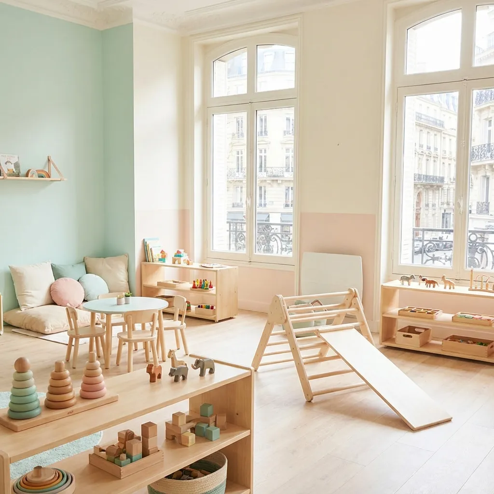
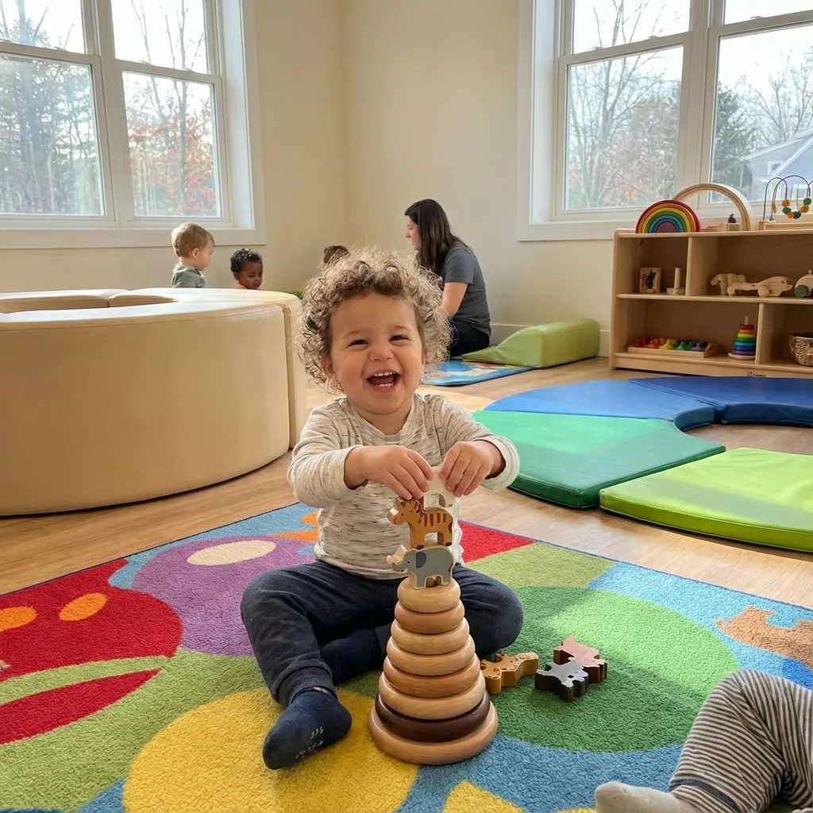
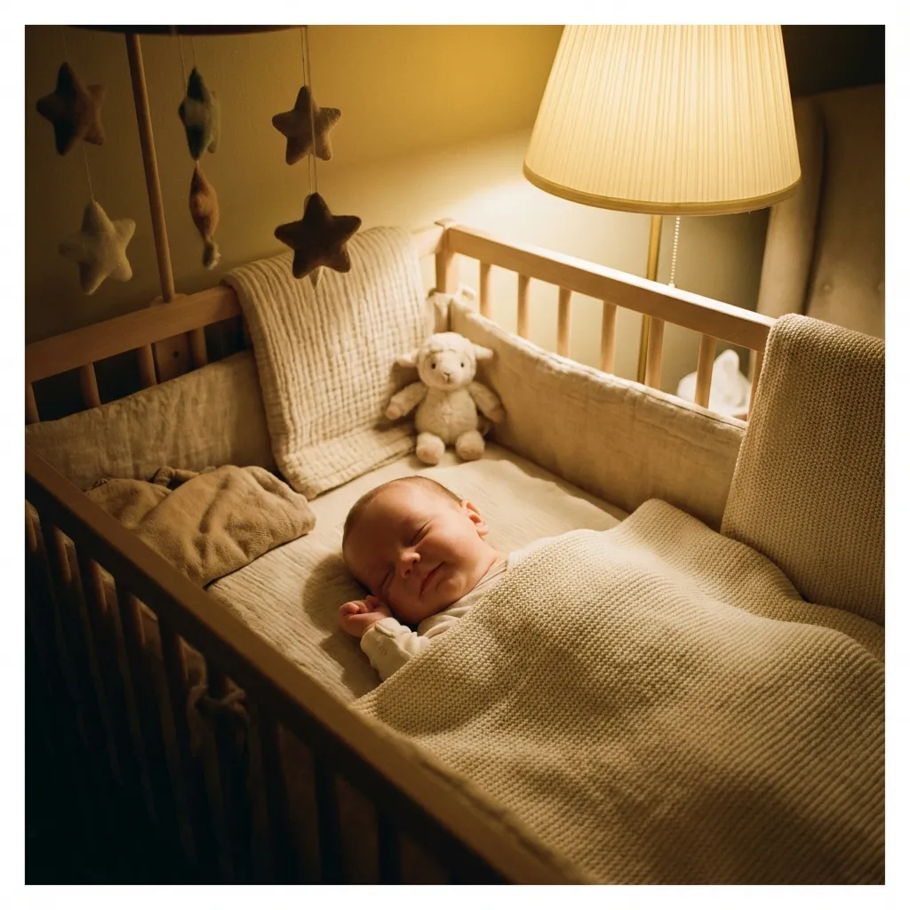

Micro-crèche • 12 Berceaux • Jardin Privatif
Située au cœur du 15ème arrondissement, notre micro-crèche offre un cadre exceptionnel de 140m² avec un jardin privatif. L'aménagement a été pensé pour favoriser la motricité libre et l'exploration sensorielle.
"Notre équipe dynamique et passionnée a hâte d'accueillir votre enfant. Ici, chaque journée est une nouvelle aventure !"


